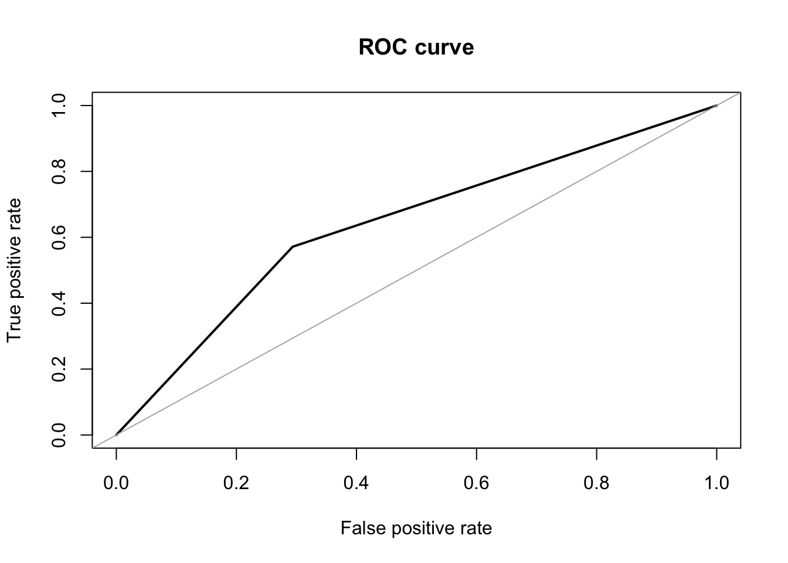
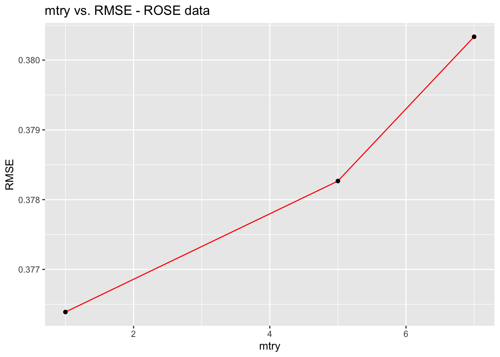

library(tidyverse)
library(dplyr)
library(dslabs)
library(ggplot2)
library(lubridate)
library(caret)
library(HistData)
library(Lahman)
library(purrr)
library(tidyr)d <- read_csv('./data/train.csv')
d <- d[, !(names(d) %in% c("surveyid", "village", "survey_date"))]
na_cols <- names(which(colSums(is.na(d))>0))
d <- d[ , !(names(d) %in% na_cols)]
# d$Class<-as.factor(d$depressed) # convert class to factor
# levels(d$Class) <- c('not_depressed', 'depressed') # names of factors
# summary(d$Class)
# Correct imbalance in data
#ROSE algorithm
library(ROSE)
drose <- ROSE(depressed ~ ., N = 1143, data = d, seed = 260)$data
table(drose$depressed)##
## 0 1
## 534 609#Data partition
set.seed(260)
test_index <- createDataPartition(d$depressed, times = 1, p = 0.2, list = FALSE)
test_set <- d[test_index, ]
train_set <- d[-test_index, ]
#predictor / response definition
predictor_variables <- d[,-48]
response_variable <- d$depressed
#swap to have minority class coded as 1
levels(response_variable) <- c('0', '1')
table(d$depressed)##
## 0 1
## 950 193glm_train <- glm(depressed ~ ., data = train_set, family = "binomial")
summary(glm_train)##
## Call:
## glm(formula = depressed ~ ., family = "binomial", data = train_set)
##
## Deviance Residuals:
## Min 1Q Median 3Q Max
## -1.6634 -0.6411 -0.5339 -0.3522 2.5294
##
## Coefficients: (2 not defined because of singularities)
## Estimate Std. Error z value Pr(>|z|)
## (Intercept) -8.455e-01 6.845e-01 -1.235 0.21673
## femaleres -1.741e-02 3.534e-01 -0.049 0.96070
## age 5.845e-03 8.298e-03 0.704 0.48117
## married -3.380e-01 2.629e-01 -1.286 0.19848
## children 3.652e-02 1.603e-01 0.228 0.81977
## hhsize 7.128e-03 1.347e-01 0.053 0.95781
## edu -7.592e-02 3.634e-02 -2.089 0.03669 *
## hh_children 3.761e-02 8.980e-02 0.419 0.67537
## cons_nondurable 1.376e-02 1.299e-02 1.059 0.28943
## asset_livestock 1.305e-03 3.610e-03 0.362 0.71765
## asset_durable -7.700e-04 4.242e-03 -0.182 0.85596
## asset_phone 4.752e-03 4.785e-03 0.993 0.32065
## asset_savings -5.852e+04 4.158e+04 -1.407 0.15933
## asset_land_owned_total 3.077e-02 6.891e-02 0.447 0.65518
## asset_niceroof -1.092e+01 8.828e+02 -0.012 0.99013
## cons_allfood -1.461e-02 1.351e-02 -1.082 0.27939
## cons_ownfood -4.990e-03 1.592e-02 -0.313 0.75401
## cons_med_total -4.014e-03 1.514e-02 -0.265 0.79092
## cons_ed -5.852e+04 4.158e+04 -1.407 0.15933
## cons_social -1.138e-02 2.177e-02 -0.523 0.60096
## cons_other -1.128e-02 1.411e-02 -0.800 0.42394
## ent_wagelabor 1.189e-01 5.856e-01 0.203 0.83916
## ent_ownfarm -6.059e-01 3.145e-01 -1.927 0.05400 .
## ent_business -4.201e-01 4.240e-01 -0.991 0.32186
## ent_nonagbusiness 3.415e-02 2.942e-01 0.116 0.90759
## ent_employees -4.400e-01 7.189e-01 -0.612 0.54048
## ent_nonag_revenue 2.464e-03 1.313e-03 1.877 0.06058 .
## ent_nonag_flowcost 8.070e-02 3.242e-02 2.489 0.01281 *
## ent_farmrevenue -3.388e-02 2.501e-02 -1.355 0.17554
## ent_farmexpenses 1.794e-01 5.590e-02 3.210 0.00133 **
## ent_animalstockrev 1.115e-02 1.218e-02 0.916 0.35989
## ent_total_cost -5.852e+04 4.158e+04 -1.407 0.15933
## fs_adskipm_often -1.921e-02 1.754e-02 -1.095 0.27334
## fs_adwholed_often 1.090e-01 3.355e-02 3.247 0.00117 **
## med_vacc_newborns NA NA NA NA
## med_child_check NA NA NA NA
## labor_primary -2.661e-01 5.883e-01 -0.452 0.65105
## wage_expenditures -4.160e-04 3.269e-02 -0.013 0.98985
## durable_investment -1.345e-04 3.543e-03 -0.038 0.96970
## nondurable_investment 5.852e+04 4.158e+04 1.407 0.15933
## given_mpesa -1.738e-01 9.240e-01 -0.188 0.85076
## amount_given_mpesa 3.685e+05 9.687e+05 0.380 0.70368
## received_mpesa 3.938e-01 4.254e-01 0.926 0.35458
## amount_received_mpesa -3.685e+05 9.687e+05 -0.380 0.70368
## net_mpesa 3.685e+05 9.687e+05 0.380 0.70368
## saved_mpesa -1.758e-02 2.527e-01 -0.070 0.94455
## amount_saved_mpesa -3.852e-03 7.636e-03 -0.504 0.61399
## early_survey 2.151e-01 3.168e-01 0.679 0.49708
## day_of_week -3.722e-02 5.570e-02 -0.668 0.50399
## ---
## Signif. codes: 0 '***' 0.001 '**' 0.01 '*' 0.05 '.' 0.1 ' ' 1
##
## (Dispersion parameter for binomial family taken to be 1)
##
## Null deviance: 841.62 on 913 degrees of freedom
## Residual deviance: 780.71 on 867 degrees of freedom
## AIC: 874.71
##
## Number of Fisher Scoring iterations: 13pred <- predict(glm_train, test_set, type="response")
pred <- as.integer(pred>0.18)
cm <- confusionMatrix(as.factor(pred), as.factor(test_set$depressed))
library(pROC)
library(verification)
roc.curve(test_set$depressed, pred)
## Area under the curve (AUC): 0.639auc_log <- as.numeric(auc(roc(test_set$depressed, pred)))
results <- tibble(Method = "Logistic Regression", AUC = auc_log,
F1 = cm$byClass["F1"], Specificity = cm$byClass["Specificity"],
Balanced_Accuracy = cm$byClass["Balanced Accuracy"])
results## # A tibble: 1 × 5
## Method AUC F1 Specificity Balanced_Accuracy
## <chr> <dbl> <dbl> <dbl> <dbl>
## 1 Logistic Regression 0.639 0.792 0.571 0.639library(rpart)
library(rpart.plot)
#build decision tree models on training set
tree.rose <- rpart(depressed~ ., data = train_set, method = 'class')
rpart.plot(tree.rose)printcp(tree.rose)##
## Classification tree:
## rpart(formula = depressed ~ ., data = train_set, method = "class")
##
## Variables actually used in tree construction:
## [1] cons_ed cons_other ent_farmexpenses ent_ownfarm
## [5] ent_total_cost fs_adskipm_often fs_adwholed_often
##
## Root node error: 158/914 = 0.17287
##
## n= 914
##
## CP nsplit rel error xerror xstd
## 1 0.010549 0 1.00000 1.0000 0.072353
## 2 0.010000 7 0.92405 1.1962 0.077494pred.tree.rose <- predict(tree.rose, newdata = test_set, type = "prob")
pred.tree.rose <- as.integer(pred.tree.rose[,2]>0.2)
roc.curve(test_set$depressed, pred.tree.rose)## Area under the curve (AUC): 0.566cm_tree <- confusionMatrix(as.factor(pred.tree.rose), as.factor(test_set$depressed))
auc_tree <- as.numeric(auc(roc(test_set$depressed, pred.tree.rose)))
result_tree <- tibble(Method = "Classification Tree",
AUC = auc_tree,
F1 = cm_tree$byClass["F1"],
Specificity = cm_tree$byClass["Specificity"],
Balanced_Accuracy = cm_tree$byClass["Balanced Accuracy"])
results <- bind_rows(results, result_tree)Bootstrapped Aggregation (Bagging) is an ensemble method that creates multiple models of the same type from different sub-samples of the same dataset. The predictions from each separate model are combined together to provide a superior result. This approach has shown participially effective for high-variance methods such as decision trees.
Here is bagging applied to the recursive partitioning decision tree for our depression dataset.
library(ipred)
fit_ipred <- bagging(depressed~., data=train_set)
pred.ipred <- predict(fit_ipred, newdata = test_set)
pred.ipred <- as.integer(pred.ipred>0.2)
roc.curve(test_set$depressed, pred.ipred)## Area under the curve (AUC): 0.667cm_ipred <- confusionMatrix(as.factor(pred.ipred), as.factor(test_set$depressed))
results <- bind_rows(results, tibble(Method = "Bagging",
AUC = as.numeric(auc(roc(test_set$depressed, pred.ipred))),
F1 = cm_ipred$byClass["F1"], Specificity = cm_ipred$byClass["Specificity"],
Balanced_Accuracy = cm_ipred$byClass["Balanced Accuracy"]))control <- trainControl(method = "cv",number = 5, p = .8, classProbs = TRUE)
train_knn <- train(train_set[, -which(names(train_set) == "depressed")],
make.names(train_set$depressed), method = "knn",
tuneGrid = data.frame(k = seq(3,10, 2)), trControl = control,
metric = "ROC", maximize = TRUE
)
train_knn## k-Nearest Neighbors
##
## 914 samples
## 48 predictor
## 2 classes: 'X0', 'X1'
##
## No pre-processing
## Resampling: Cross-Validated (5 fold)
## Summary of sample sizes: 732, 730, 731, 732, 731
## Resampling results across tuning parameters:
##
## k Accuracy Kappa
## 3 0.7867680 0.031216399
## 5 0.8064105 0.008498618
## 7 0.8227744 0.015016266
## 9 0.8271402 0.000000000
##
## Accuracy was used to select the optimal model using the largest value.
## The final value used for the model was k = 9.fit_knn <- knn3(train_set[, -which(names(train_set) == "depressed")],
factor(train_set$depressed), k = train_knn$bestTune$k)
y_hat_knn <- predict(fit_knn, test_set[, -which(names(train_set) == "depressed")], type="class")
cm_knn <- confusionMatrix(as.factor(y_hat_knn), as.factor(test_set$depressed))
roc.curve(test_set$depressed, y_hat_knn)## Area under the curve (AUC): 0.512results <- bind_rows(results, tibble(Method = "kNN", AUC = as.numeric(auc(roc(as.numeric(test_set$depressed), as.numeric(y_hat_knn)))),
F1 = cm_knn$byClass["F1"], Specificity = cm_knn$byClass["Specificity"],
Balanced_Accuracy = cm_knn$byClass["Balanced Accuracy"]))control <- trainControl(method = "cv",number = 5, p = .8)
grid <- data.frame(mtry=c(1, 5, sqrt(ncol(d))))
train_rf <- train(train_set[, -which(names(train_set) == "depressed")],
train_set$depressed, method = "rf",
tuneGrid = grid, trControl = control,
metric = "F1", maximize = TRUE)
train_rf$bestTune## mtry
## 3 7library(randomForest)
fit_rf <- randomForest(depressed~., data=train_set, mtry = train_rf$bestTune$mtry)
y_hat_rf <- predict(fit_rf, test_set)
y_hat_rf <- as.integer(y_hat_rf>0.18)
roc.curve(test_set$depressed, y_hat_rf)## Area under the curve (AUC): 0.683cm_rf <- confusionMatrix(factor(y_hat_rf), factor(test_set$depressed))
results <- bind_rows(results, tibble(Method = "Random Forest", AUC = as.numeric(auc(roc(test_set$depressed, y_hat_rf))),
F1 = cm_rf$byClass["F1"], Specificity = cm_rf$byClass["Specificity"],
Balanced_Accuracy = cm_rf$byClass["Balanced Accuracy"]))library(gbm)
grid_gbm <- expand.grid(n.trees = c(50, 100, 200), interaction.depth = c(1,2,3),
shrinkage = c(0.1, 0.5, 0.8), n.minobsinnode = c(5, 10, 15))
train_gbm <- train(depressed ~ ., data = train_set, method = "gbm", trControl = control,
verbose = FALSE, tuneGrid = grid_gbm, metric = "F1", maximize = TRUE)
train_gbm$bestTune## n.trees interaction.depth shrinkage n.minobsinnode
## 78 200 3 0.8 10fit_gbm <- gbm(depressed ~., data=train_set, distribution = "bernoulli")
y_hat_gbm <- predict(fit_gbm, test_set)
y_hat_gbm <- as.integer(y_hat_gbm>-1.55)
roc.curve(test_set$depressed, y_hat_gbm)## Area under the curve (AUC): 0.694cm_gbm <- confusionMatrix(as.factor(y_hat_gbm), as.factor(test_set$depressed))
results <- bind_rows(results, tibble(Method = "Gradient Boosted Machine", AUC = as.numeric(auc(roc(test_set$depressed, y_hat_gbm))),
F1 = cm_gbm$byClass["F1"], Specificity = cm_gbm$byClass["Specificity"],
Balanced_Accuracy = cm_gbm$byClass["Balanced Accuracy"]))From results before, Random Forest and Gradient Boosted Machine seem to perform the best in terms of balanced accuracy and specificity measure. Here we attempt these 2 models with resampled balanced data.
table(drose$depressed)##
## 0 1
## 534 609#Data partition
set.seed(260)
test_index <- createDataPartition(drose$depressed, times = 1, p = 0.2, list = FALSE)
test_rose <- d[test_index, ]
train_rose <- d[-test_index, ] control <- trainControl(method = "cv",number = 5, p = .8)
grid <- data.frame(mtry=c(1, 5, sqrt(ncol(drose))))
train_rf_rose <- train(train_rose[, -which(names(train_rose) == "depressed")],
train_rose$depressed, method = "rf", tuneGrid = grid, trControl = control,
metric = "F1", maximize = TRUE)
train_rf_rose$bestTune## mtry
## 3 7fit_rf_rose <- randomForest(depressed~., data=train_rose, mtry = train_rf_rose$bestTune$mtry)
y_rose_rf <- predict(fit_rf_rose, test_rose)
y_rose_rf <- as.integer(y_hat_rf>0.18)
roc.curve(test_rose$depressed, y_rose_rf)## Area under the curve (AUC): 0.683cm_rf_rose <- confusionMatrix(factor(y_rose_rf), factor(test_rose$depressed))
results <- bind_rows(results, tibble(Method = "ROSE - Random Forest",
AUC = as.numeric(auc(roc(test_rose$depressed, y_rose_rf))),
F1 = cm_rf_rose$byClass["F1"],
Specificity = cm_rf_rose$byClass["Specificity"],
Balanced_Accuracy = cm_rf_rose$byClass["Balanced Accuracy"]))library(gbm)
train_gbm_rose <- train(depressed ~ ., data = train_rose, method = "gbm", trControl = control,
verbose = FALSE, tuneGrid = grid_gbm, metric = "F1", maximize = TRUE)
#train_gbm_rose$bestTune
fit_gbm_rose <- gbm(depressed ~., data=train_rose, distribution = "bernoulli")
y_rose_gbm <- predict(fit_gbm_rose, test_rose)
y_rose_gbm <- as.integer(y_rose_gbm>-1.55)
roc.curve(test_rose$depressed, y_rose_gbm)
## Area under the curve (AUC): 0.665cm_gbm_rose <- confusionMatrix(as.factor(y_rose_gbm), as.factor(test_rose$depressed))
results <- bind_rows(results, tibble(Method = "ROSE - Gradient Boosted Machine",
AUC = as.numeric(auc(roc(test_rose$depressed, y_rose_gbm))),
F1 = cm_gbm_rose$byClass["F1"],
Specificity = cm_gbm_rose$byClass["Specificity"],
Balanced_Accuracy = cm_gbm_rose$byClass["Balanced Accuracy"]))results## # A tibble: 8 × 5
## Method AUC F1 Specificity Balanced_Accuracy
## <chr> <dbl> <dbl> <dbl> <dbl>
## 1 Logistic Regression 0.639 0.792 0.571 0.639
## 2 Classification Tree 0.566 0.898 0.2 0.566
## 3 Bagging 0.667 0.829 0.571 0.667
## 4 kNN 0.512 0.917 0.0286 0.512
## 5 Random Forest 0.683 0.747 0.743 0.683
## 6 Gradient Boosted Machine 0.694 0.724 0.8 0.694
## 7 ROSE - Random Forest 0.683 0.747 0.743 0.683
## 8 ROSE - Gradient Boosted Machine 0.665 0.793 0.629 0.665